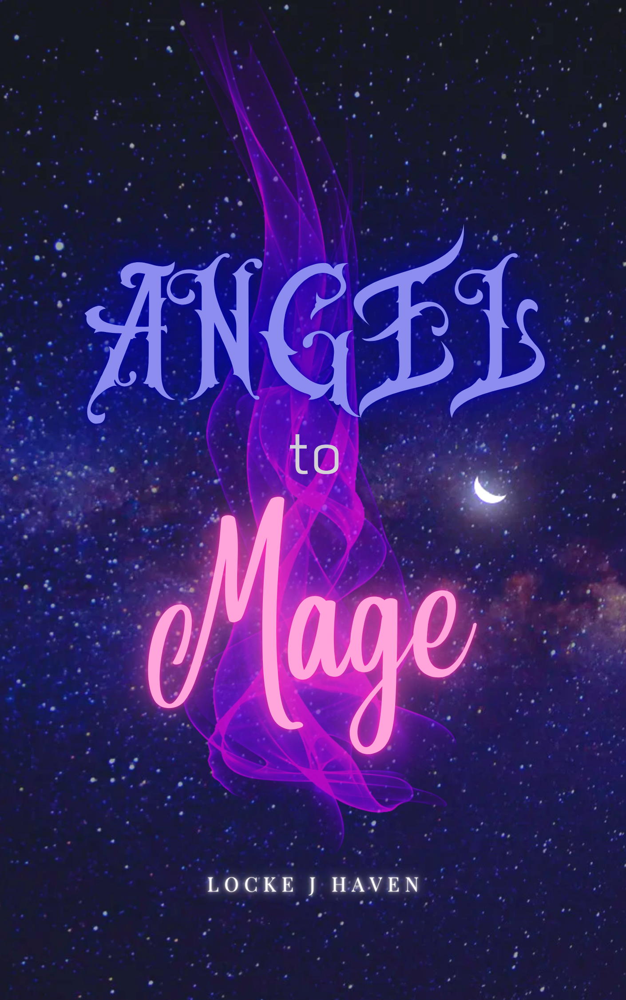

|

|
STATUS • Planning
LENGTH • 2 Paragraphs
STARTED • 10.04.2022
GENRE • Dark Fantasy
TYPE • Short Story
❝ I never stood a chance, did I?
" That, my love, is the tragedy of it all. Once, you did.” Spirit crouches down beside Warlock, listening to their rasping breaths. Her empathy is empty. Words dripping with hollow meaning. “When you stood by my side; when you understood the joy and worth of the world, you had as many chances as you could have wanted. Instead, you just had to follow your destiny.
--- Angel to Mage
|